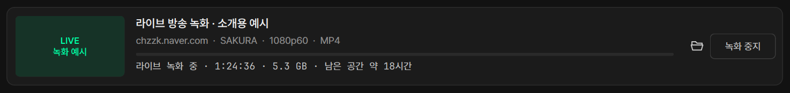
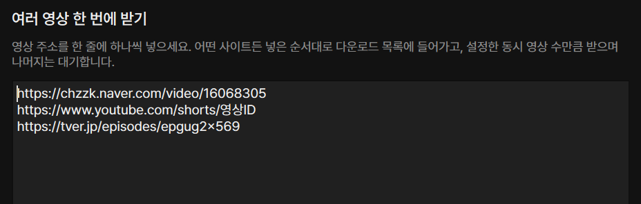
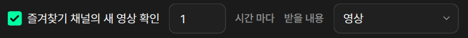
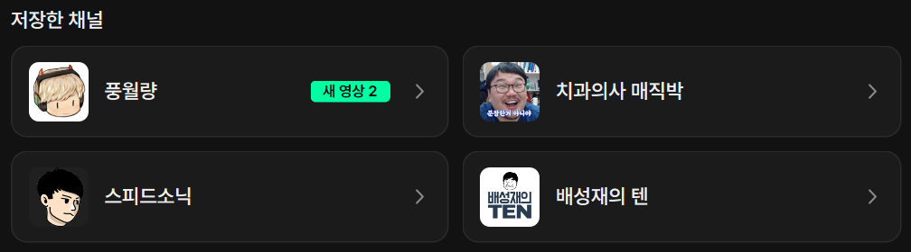
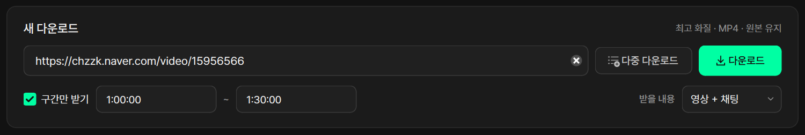
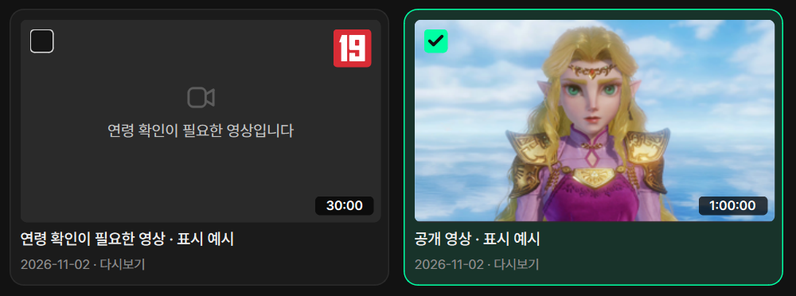
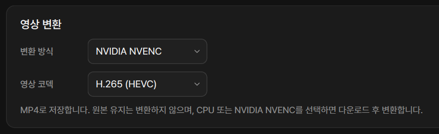
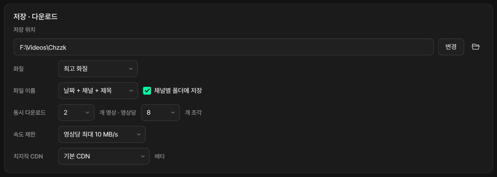
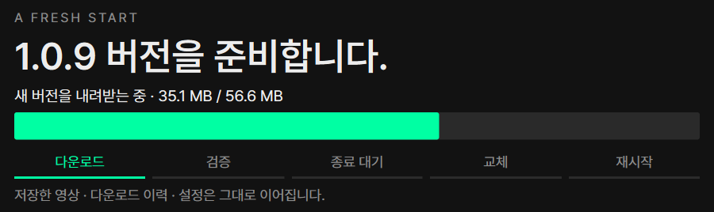

주소를 붙여넣고,
다운로드.
영상 주소를 넣고 ‘다운로드’를 누르면 목록에 추가됩니다.
여러 개는 ‘다중 다운로드’에 한 줄씩 넣고,
필요하면 구간이나 채팅도 함께 고르세요.
WINDOWS VIDEO DOWNLOADER
치지직 다시보기·클립·라이브부터 YouTube·인스타그램·TVer까지. 사이트를 가리지 않고 영상을 받는 Windows 다운로더입니다.
Windows 10·11 (x64) · 설치 없이 압축을 풀어 실행 · 1.0.9
2026-11-08 · 다시보기 글로벌 CDN(베타), 새 영상 자동 다운로드의 받을 내용 선택 1.0.9 새 소식 ↗ · 실행할 때 보안 경고가 뜨나요?

HOW IT WORKS
SCROLL TO EXPLOREFEATURES
기능마다 실제 앱 화면에서 해당 부분만 크게 보여 드립니다.
방송 주소를 넣으면 그 시점부터 녹화합니다. 경과 시간·녹화 크기와 남은 공간으로 더 녹화할 수 있는 시간을 보여 주고, 중지하거나 연결이 끊기면 지금까지 녹화한 부분을 MP4로 저장합니다. 녹화 중에도 다른 영상을 함께 받을 수 있습니다.

‘다중 다운로드’ 창에 주소를 한 줄에 하나씩 넣으면 입력한 순서대로 받습니다. 사이트가 섞여 있어도 괜찮습니다.

정한 간격(1~24시간)마다 새 영상을 확인해 배지와 트레이 알림으로 알려 줍니다. 원하는 채널은 새 영상을 자동으로 받습니다.


‘구간만 받기’에 시작·끝을 넣으면 그 부분만 받고, ‘받을 내용’에서 영상·채팅만·영상 + 채팅을 고를 수 있습니다. 치지직 다시보기 채팅은 인터넷 없이 열리는 HTML 한 파일로 저장되며, 닉네임을 누르면 그 사용자의 채팅만 모아 봅니다.

치지직 계정을 연결하면 그 계정의 시청 권한으로 받습니다. 연령 확인이 필요한 영상은 19 배지로 미리 구분합니다.

기본은 받은 그대로의 MP4입니다. 용량을 줄이고 싶을 때만 CPU·NVIDIA NVENC와 H.264·H.265 변환을 고르세요.

저장 위치·화질·파일 이름(날짜·채널·제목)·채널별 폴더·동시 다운로드·영상당 속도 제한을 정해 두면, 그다음부터는 붙여넣기만 하면 됩니다. 일부 구간이 빠지는 환경이라면 ‘치지직 CDN’을 글로벌(베타)로 바꿔 볼 수 있습니다.

시작할 때 새 버전을 확인하고 변경 내역을 먼저 보여 줍니다. ‘지금 업데이트’를 고르면 진행 중인 다운로드가 끝난 뒤 파일을 SHA-256으로 검증해 교체하고, 실패하면 원래대로 되돌립니다. 저장한 영상·기록·설정·계정은 그대로입니다.

모든 화면은 실제 1.0.9 배포 EXE에서 캡처했고, 기능마다 해당 부분만 잘라 보여 줍니다. 진행·녹화 상태, 저장 배지, 새 영상 개수, 19세 표시, 업데이트 진행률은 소개용 예시입니다.
THREE STEPS
받은 ZIP을 풀고 ChzzkDownloader.exe를 실행하세요. 함께 들어 있는 lib·bin 폴더는 EXE 옆에 그대로 둡니다. 필요한 영상 도구는 첫 실행에 자동으로 준비합니다.
사이드바 맨 아래 ‘설정’에서 저장 위치·화질·파일 이름을 정합니다. 한 번 정하면 다음 실행에도 유지됩니다.
영상 주소를 붙여넣고 ‘다운로드’를 누르세요. 브라우저에서 주소를 끌어다 놓아도 됩니다.
YOUR ACCOUNT · YOUR PC
아이디·비밀번호를 입력하지 않습니다. 평소 브라우저에서 치지직에 로그인한 뒤 내보낸 cookies.txt를 가져오면 계정이 연결되고, 팔로잉 채널이 즐겨찾기에 자동으로 추가됩니다.
https://chzzk.naver.com/에서 확장 프로그램의 왼쪽 첫 번째 Export를 눌러 chzzk.naver.com_cookies.txt를 저장합니다.실제 1.0.9 화면 · 계정 이름과 사진은 소개용 예시입니다. 19세 영상은 본인·성인 인증된 계정의 시청 권한이 있어야 받을 수 있습니다. 가져온 쿠키 파일은 프로그램이 수정·삭제하지 않으므로 연결 후 필요 없으면 직접 삭제하세요. 쿠키가 만료되면 다시 가져와야 하며 영구 로그인을 보장하지 않습니다.

FAQ
영상이 있는 페이지의 주소라면 사이트를 가리지 않고 분석해 받습니다. 치지직은 https://chzzk.naver.com/video/번호 다시보기 주소나 https://chzzk.naver.com/clips/ID 클립 주소, 라이브 방송 주소를 넣으세요. 그 밖에 YouTube(쇼츠)·인스타그램 릴스 등의 개별 영상 주소도 받을 수 있습니다. 사이트의 변경이나 계정 접근 조건에 따라 다운로드 가능 여부가 달라질 수 있습니다.
‘채널 즐겨찾기’에서 채널명이나 https://chzzk.naver.com/채널ID 주소로 검색해 ‘추가’를 누르세요. 저장한 카드를 누르면 전체 영상·다시보기·업로드·클립을 최신순·인기순으로 볼 수 있고, 원하는 영상만 선택해 받습니다. ‘받지 않은 영상만 선택’으로 아직 받지 않은 영상을 한 번에 고를 수 있으며, 카드는 드래그로 순서를 바꿉니다.
치지직 다시보기 주소를 넣고 ‘받을 내용 → 채팅만’을 선택하거나, 채널 화면에서 ‘선택한 영상 채팅 저장’을 누르세요. 저장한 HTML은 인터넷 연결 없이 열리고, 검색·사용자별 요약에서 구독·후원·가림 상태를 볼 수 있습니다. 닉네임을 바꾼 사용자도 같은 ID로 모입니다. 팔로우 여부는 제공되지 않으며, 라이브·클립·다른 사이트의 채팅은 대상이 아닙니다.
재인코딩 없이 자르므로 몇 초 차이가 날 수 있습니다. 끝을 비우면 영상 끝까지 받고, 한 번 추가하면 체크가 풀립니다. 주소 입력·다중 다운로드에만 적용되며 채널 화면의 일괄 선택에는 적용되지 않습니다. ‘영상 + 채팅’에서는 영상만 잘라 받고 채팅은 전체를 저장합니다.
1080p60 기준 시간당 약 3.8GB, 10시간에 약 38GB가 필요하며 화질에 따라 달라집니다. MP4로 정리할 때 녹화 크기만큼 여유 공간이 더 필요합니다. 남은 공간이 1GB 아래로 줄면 녹화를 멈추고 저장하며, 정리할 공간이 없거나 MP4 변환에 실패하면 TS 파일로 보존합니다. 라이브 녹화는 재실행 복원·이어받기를 하지 않습니다.
‘설정 → 프로그램 동작 → 즐겨찾기 채널의 새 영상 확인’을 켜고 간격을 1~24시간으로 입력하세요(기본 꺼짐, 기본 간격 1시간). 간격 옆 ‘받을 내용’에서 영상·채팅만·영상 + 채팅을 고르고, 자동으로 받을 채널은 채널 화면에서 ‘새 영상 자동 다운로드’도 켜세요. 처음 확인한 기존 영상은 알리거나 받지 않으며, 이미 받았거나 대기·진행 중인 내용은 건너뜁니다.
시간 초과·연결 끊김 같은 일시적인 오류는 같은 실행에서 두 번까지 자동으로 이어받습니다. 취소·실패한 영상은 받은 부분을 보관해 두었다가 재시도할 때 이어받습니다. 라이브나 다시보기에서 일부 구간이 빠진다면 ‘설정 → 치지직 CDN’을 글로벌 CDN(Akamai, 베타)으로 바꿔 보세요. 새로 넣는 작업부터 적용되며, 글로벌 연결에 실패하면 재시도나 기본 CDN 변경을 안내합니다. 클립은 제공된 CDN을 사용합니다.
최대 4개 영상을, 영상마다 최대 16개 조각으로 나눠 동시에 받습니다. 속도 제한은 영상 한 개당 상한(1~50 MB/s)이므로 여러 영상을 받을 때 합계는 동시 영상 수만큼 늘어날 수 있습니다. 라이브·구간 다운로드에는 제한이 적용되지 않을 수 있습니다.
대기 상태로 복원되며 자동으로 시작하지 않습니다. ‘대기열 계속’을 누르면 저장한 위치와 옵션으로 받은 부분부터 이어받습니다. 라이브·구간 작업은 대상이 아닙니다. 필요 없는 대기 항목은 다운로드 목록에서 우클릭해 ‘목록에서 삭제’를 누르면 다시 복원하지 않으며, 기록과 영상 파일은 유지합니다.
공유 주소·모바일 주소처럼 형태가 달라도 같은 영상이면 다시 받을지 먼저 확인합니다. 기록 목록을 정리했거나 다시 실행해도 받은 영상을 기억하며, 대기·진행 중인 영상은 중복으로 넣지 않습니다.
대기열 일시정지는 새로운 영상의 시작을 멈춥니다. 진행 중인 영상은 계속 다운로드하며, 해당 영상의 ‘취소’ 버튼으로 중단할 수 있습니다.
다운로드 기록에서 해당 항목과 미리보기 캐시, 그 작업이 보관한 미완성 다운로드 조각을 제거합니다. 저장 폴더의 완성된 영상 파일은 유지되며, 채널 화면의 받음 배지와 중복 확인도 그대로 유지됩니다.
TVer의 개별 에피소드 주소를 넣으세요. 일본 VPN에 연결해야 하며 다운로드가 끝날 때까지 연결을 유지해야 합니다.
치지직 계정을 연결하면 받을 수 있습니다. 19세 영상은 본인·성인 인증된 네이버 계정이, 구독자 영상 등은 그 계정의 시청 권한이 필요합니다. 인증이나 시청 권한이 없는 영상은 받을 수 없습니다.
EXE 옆 .auth 폴더에 현재 Windows 사용자 계정에 묶어 암호화 저장합니다. 개발자나 별도 수집 서버로 전송하지 않으며, 인증 쿠키는 네이버·치지직 인증과 영상 조회에 전달됩니다. 다른 PC·Windows 계정에서는 쓸 수 없고, 쿠키가 만료되거나 네이버가 로그인을 해제하면 다시 가져와야 합니다. 로그아웃하면 현재 계정의 쿠키만 삭제합니다.
다른 계정의 쿠키를 가져오면 프로필로 추가되고, 같은 계정은 쿠키를 갱신합니다. 설정 위의 프로필 사진·이름을 눌러 계정을 전환하고, ‘새 계정 추가’로 연결 창을 바로 열 수 있습니다. 즐겨찾기와 순서는 계정마다 따로 유지하며, 로그아웃해도 목록은 남습니다.
아닙니다. 첫 실행에 FFmpeg·ffprobe와 yt-dlp nightly를 받아 두고, 시작할 때마다 확인해 없거나 손상되었으면 자동으로 다시 준비합니다. 진행 상황은 어느 탭에서든 메인 창 하단에 표시됩니다. 설정의 ‘도구 업데이트’를 누르면 바뀌었거나 손상된 도구만 검증해 교체합니다.
시작할 때 GitHub의 정식 릴리스를 확인하고, 새 버전이 있으면 추가·변경·수정 내역과 함께 ‘지금 업데이트’ 또는 ‘나중에’를 묻습니다. 설치를 고르면 진행 중인 다운로드가 끝난 뒤 업데이트 창이 ZIP을 받아 SHA-256으로 검증하고, 프로그램 파일만 교체한 뒤 다시 시작합니다. 교체에 실패하면 원래대로 복원합니다. 저장한 영상·다운로드 기록·설정·채널 즐겨찾기·저장한 계정은 바꾸지 않습니다. ‘설정 → 업데이트 확인’으로 직접 확인하면 최신 버전일 때도 알려 줍니다.
설정에서 ‘닫기 버튼을 누르면 트레이로’를 켜면 창을 숨겨도 다운로드가 계속됩니다. 트레이 메뉴에서 대기열을 멈추거나 재개하고, 완료 알림으로 다시 돌아올 수 있습니다. 이 설정이 꺼져 있으면 종료할지 한 번 확인합니다.
현재 배포하는 ChzzkDownloader.exe에는 개발자 신원을 확인하는 코드 서명이 없습니다. ‘알 수 없는 게시자’로 표시되거나 다운로드·실행 이력이 충분하지 않아 SmartScreen 경고가 나올 수 있습니다. 서명이 없다는 사실만으로 트로이목마가 들어 있다는 뜻은 아닙니다. 다만 실제 백신 탐지까지 모두 서명 때문이라고 단정할 수는 없습니다.
‘알 수 없는 게시자’·‘Windows의 PC 보호’·‘인식할 수 없는 앱’: 게시자나 실행 평판을 충분히 확인하지 못했을 때도 나오는 경고입니다. 이 문구만으로 특정 트로이목마가 검출됐다고 판단하지 마세요. 다운로드 출처와 파일을 확인하세요.
Trojan:Win32/… 같은 탐지명·파일 격리·삭제: Windows 보안이나 백신의 악성코드 검사 결과이므로 별도 확인이 필요합니다. 정상 파일을 잘못 탐지하는 ‘오탐’일 수도 있지만, 서명 유무나 탐지명만으로 오탐이라고 확정할 수는 없습니다. 실행·격리 해제를 보류하고 아래 방법으로 신고해 주세요.
코드 서명은 배포자와 서명 이후의 변조 여부를 확인하는 전자 서명이며, 악성코드 검사나 안전 보증서와는 다릅니다. SmartScreen은 파일과 서명의 평판도 확인합니다. Microsoft 코드 서명 안내 ↗ · SmartScreen 동작 원리 ↗
1. 공식 GitHub 릴리스 ↗에서 ZIP을 받으세요. 메신저 첨부나 재업로드 파일 대신 공식 배포 파일을 이용하세요.
2. ZIP이 든 폴더의 빈 곳에서 우클릭해 터미널 또는 PowerShell을 열고 다음 명령을 실행하세요. 파일명은 받은 버전에 맞춰 바꾸세요.
Get-FileHash -LiteralPath ".\ChzzkDownloader_v109.zip" -Algorithm SHA256
출력의 Hash를 같은 버전 릴리스의 ‘파일 검증’ 값과 비교하세요. 대소문자는 상관없습니다. ZIP 원본끼리 비교해야 하며 EXE의 해시는 다른 값입니다. 다르면 실행하지 말고 공식 파일을 다시 받으세요. 일치는 배포 파일과 같다는 확인이며, 악성코드가 없다는 별도 인증은 아닙니다. Microsoft 명령 설명 ↗
Windows 보안의 ‘바이러스 및 위협 방지 → 보호 기록’ 또는 사용 중인 백신의 탐지 기록에서 탐지명·파일명·프로그램 버전을 확인해 GitHub Issues ↗에 알려 주세요. 쿠키·계정 파일·개인 경로는 올리지 마세요.
Microsoft Defender의 오탐이 의심되면 Microsoft 파일 분석 접수 ↗에 해당 배포 파일을 제출해 재검토를 요청할 수 있습니다. 다른 백신은 해당 제조사의 오탐 신고 창구를 이용하세요. 제출은 해당 보안 업체에 파일을 전송하는 절차이며, 계정·설정 파일은 포함하지 마세요.
백신을 끄거나 프로그램 폴더 전체를 검사 예외로 등록할 필요는 없습니다. 탐지 원인과 검토 결과가 확인되기 전에는 실행·복원을 보류해 주세요.
READY WHEN YOU ARE.